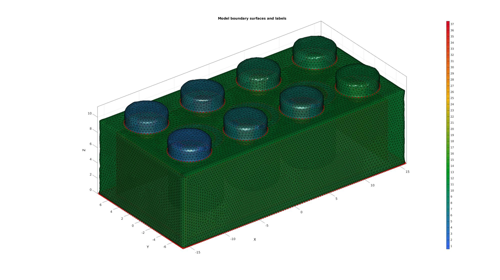
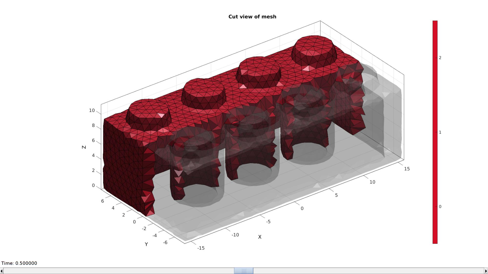
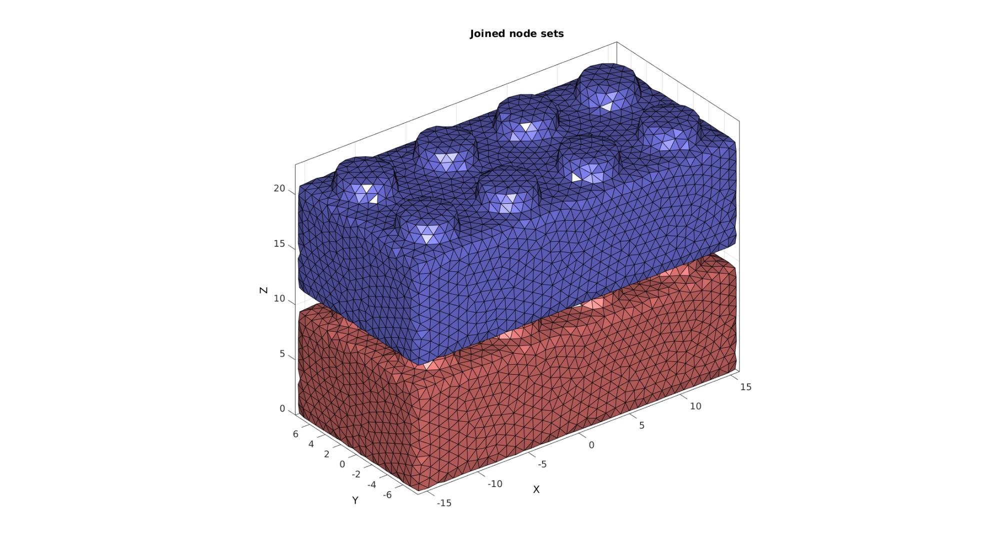
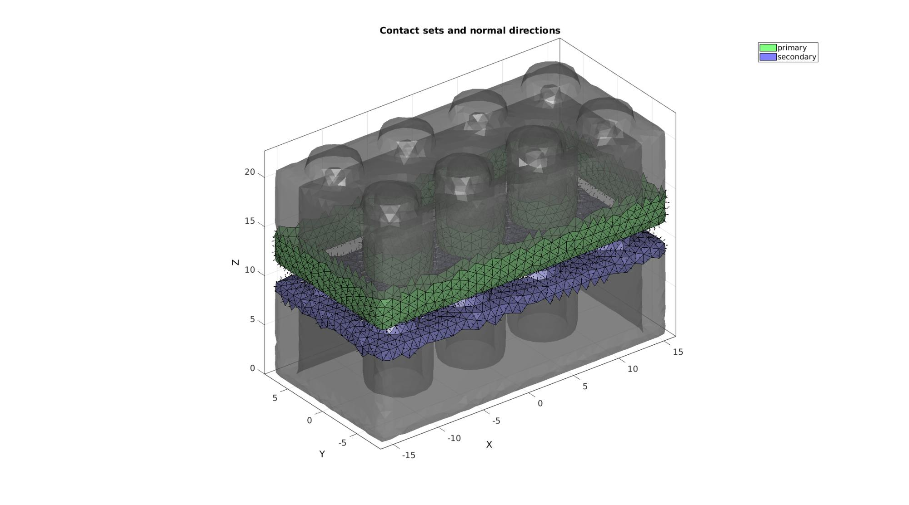
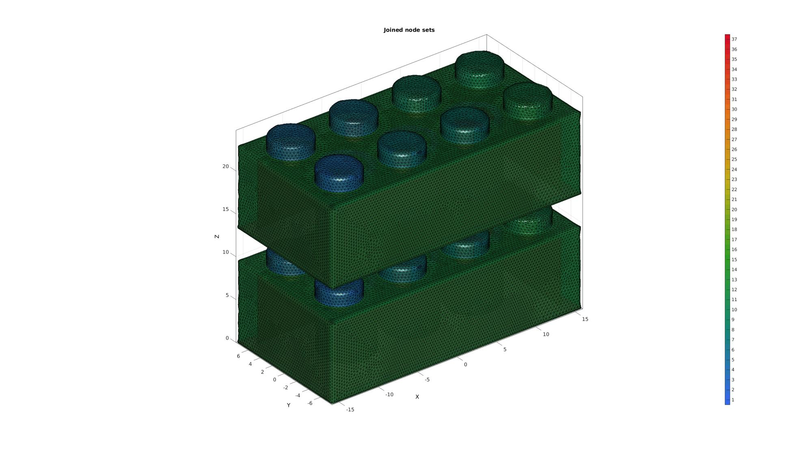
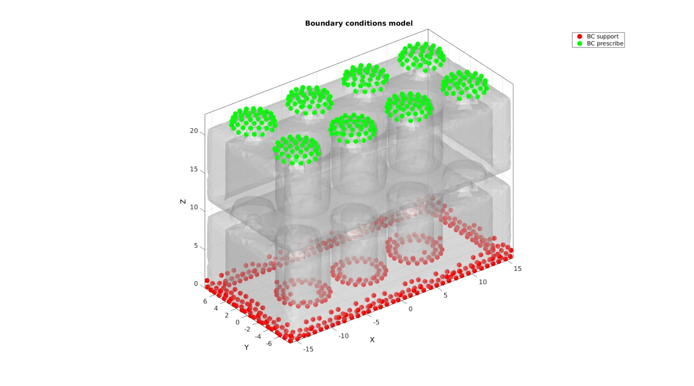
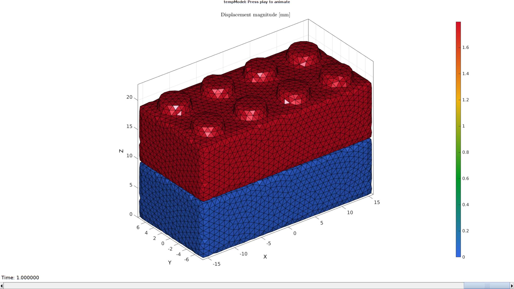

DEMO_febio_0043_lego_brick_attach.m
Below is a demonstration for:
- Building geometry for a lego block with tetrahedral elements%
- Defining the boundary conditions
- Coding the febio structure
- Running the model
- Importing and visualizing the results
Contents
- Keywords
- Plot settings
- Control parameters
- Creating model geometry and mesh
- Mesh using tetrahedral elements
- Visualizing mesh using meshView, see also |anim8|dsfaasdfs
- Create copied brick
- Joining node and element sets
- Define contact surfaces
- Define boundary conditions
- Defining the FEBio input structure
- Quick viewing of the FEBio input file structure
- Exporting the FEBio input file
- Running the FEBio analysis
- Import FEBio results
Keywords
- febio_spec version 3.0
- febio, FEBio% *
- contact, sliding, sticky, friction
- tetrahedral elements, tet4
- triangular elements, tri3
- static, solid
- hyperelastic, Ogden
- displacement logfile
- stress logfile
clear; close all; clc;
Plot settings
fontSize=15; faceAlpha1=0.8; faceAlpha2=0.3; markerSize=40; lineWidth=3;
Control parameters
% Path names defaultFolder = fileparts(fileparts(mfilename('fullpath'))); savePath=fullfile(defaultFolder,'data','temp'); surfaceModelPath=fullfile(defaultFolder,'data','libSurf'); surfaceModelName='lego_block_2x4_035.mat'; pointSpacing=1; volumeFactor=500; % Defining file names febioFebFileNamePart='tempModel'; febioFebFileName=fullfile(savePath,[febioFebFileNamePart,'.feb']); %FEB file name febioLogFileName=fullfile(savePath,[febioFebFileNamePart,'.txt']); %FEBio log file name febioLogFileName_disp=[febioFebFileNamePart,'_disp_out.txt']; %Log file name for exporting displacement %Material parameters (MPa if spatial units are mm) E_youngs1=17000; %Youngs modulus nu1=0.25; %Poissons ratio % FEA control settings numTimeSteps=10; %Number of time steps desired max_refs=50; %Max reforms max_ups=0; %Set to zero to use full-Newton iterations opt_iter=15; %Optimum number of iterations max_retries=5; %Maximum number of retires dtmin=(1/numTimeSteps)/500; %Minimum time step size dtmax=(1/numTimeSteps); %Maximum time step size symmetric_stiffness=0; min_residual=1e-20; % Contact parameters contactPenalty=1; laugon=0; minaug=1; maxaug=10; fric_coeff=0.01; % Boundary condition parameters initialOffset=0.1; displacementMagnitude=-1.6973-initialOffset; %1.6973
Creating model geometry and mesh
% Import surface model surfaceData=load(fullfile(surfaceModelPath,surfaceModelName)); %Access model data F_brick=surfaceData.F; V_brick=surfaceData.V; % Merging nodes [F_brick,V_brick]=mergeVertices(F_brick,V_brick); % Resample mesh optionStructResmesh.pointSpacing=pointSpacing; %Set desired point spacing [F_brick,V_brick]=ggremesh(F_brick,V_brick,optionStructResmesh); C_brick=ones(size(F_brick,1),1); % Rotate model R=euler2DCM([-0.5*pi 0 0]); V_brick=V_brick*R; % Center model V_brick=V_brick-mean(V_brick,1); %Center on mean V_brick(:,3)=V_brick(:,3)-min(V_brick(:,3)); %Shift so bottom is at 0 in z-dir
%%%%%%%%%%%%%%%%%%%%%%%%%%%%%%%%%%%%%%%%%%%%%%%%%%%%%%%%%%%%%%%%%%%%%%% ------> Geogram/vorpalite for resmeshing <------ 17-Dec-2020 16:22:14 # Export mesh input file. 17-Dec-2020 16:22:14 # Run Geomgram/vorpalite. 17-Dec-2020 16:22:15 ______________________________________________________________________________ | | | o-[config ] Configuration file name:geogram.ini | | Home directory:/root | | o-[I/O ] Output = /mnt/data/MATLAB/GIBBON/data/temp/temp_out.obj | | Loading file /mnt/data/MATLAB/GIBBON/data/temp/temp.obj... | | (FP64) nb_v:35422 nb_e:0 nb_f:70840 nb_b:0 tri:1 dim:3 | | Attributes on vertices: point[3] | | o-[Load ] Elapsed time: 0.04 s | ___________________________ _/ =====[preprocessing]===== \________________________________________________ | | | o-[CmdLine ] using pre:epsilon=0(0%) | | using pre:min_comp_area=109.97(3%) | | o-[Components ] Nb connected components=1 | | Mesh does not have small connected component (good) | | o-[CmdLine ] using pre:max_hole_area=100 | | o-[Validate ] Mesh does not have 0-area facets (good) | | o-[CmdLine ] using pre:margin=0(0%) | | o-[Pre ] Elapsed time: 0.02 s | _______________________ _/ =====[remeshing]===== \____________________________________________________ | | ||| o-[Newton ] Elapsed time: 0.48s | | o-[Remesh ] Computing RVD... | | o-[Validate ] (FP64) nb_v:4228 nb_e:0 nb_f:8452 nb_b:0 tri:1 dim:3 | | Attributes on vertices: point[3] | | o-[Remesh ] Elapsed time: 0.67 s | ____________________________ _/ =====[postprocessing]===== \_______________________________________________ | | | o-[CmdLine ] using post:min_comp_area=102.471(3%) | | o-[Components ] Nb connected components=1 | | Mesh does not have small connected component (good) | | o-[CmdLine ] using post:max_hole_area=100 | | using post:max_deg3_dist=0.037265(0.10000000000000001%) | | o-[Degree3 ] Does not have any degree 3 vertex (good) | | o-[Post ] Elapsed time: 0 s | ____________________ _/ =====[result]===== \_______________________________________________________ | | | o-[FinalMesh ] (FP64) nb_v:4228 nb_e:0 nb_f:8452 nb_b:0 tri:1 dim:3 | | Attributes on vertices: point[3] | | o-[I/O ] Saving file /mnt/data/MATLAB/GIBBON/data/temp/temp_out.obj. | | .. | | o-[Total time ] Elapsed time: 1.15 s | \______________________________________________________________________________/ # Importing remeshed geometry. 17-Dec-2020 16:22:16 # Removing temporary files. 17-Dec-2020 16:22:16 # Done! 17-Dec-2020 16:22:16
Plotting model boundary surfaces and a cut view
cFigure; hold on; title('Model boundary surfaces and labels','FontSize',fontSize); gpatch(F_brick,V_brick,'w','k',faceAlpha1); axisGeom(gca,fontSize); camlight headlight; drawnow;
Mesh using tetrahedral elements
stringOpt='-pq1.2AaY'; inputStruct.stringOpt=stringOpt; inputStruct.Faces=F_brick; inputStruct.Nodes=V_brick; inputStruct.holePoints=[]; inputStruct.faceBoundaryMarker=C_brick; %Face boundary markers inputStruct.regionPoints=getInnerPoint(F_brick,V_brick); %region points inputStruct.regionA=tetVolMeanEst(F_brick,V_brick)*volumeFactor; %Volume for regular tets inputStruct.minRegionMarker=2; %Minimum region marker % Mesh model using tetrahedral elements using tetGen [meshOutput]=runTetGen(inputStruct); %Run tetGen % Access model element and patch data Fb=meshOutput.facesBoundary; Cb=meshOutput.boundaryMarker; V=meshOutput.nodes; CE=meshOutput.elementMaterialID; E=meshOutput.elements;
%%%%%%%%%%%%%%%%%%%%%%%%%%%%%%%%%%%%%%%%%%%%% --- TETGEN Tetrahedral meshing --- 17-Dec-2020 16:22:17 %%%%%%%%%%%%%%%%%%%%%%%%%%%%%%%%%%%%%%%%%%%%% --- Writing SMESH file --- 17-Dec-2020 16:22:17 ----> Adding node field ----> Adding facet field ----> Adding holes specification ----> Adding region specification --- Done --- 17-Dec-2020 16:22:17 --- Running TetGen to mesh input boundary--- 17-Dec-2020 16:22:17 Opening /mnt/data/MATLAB/GIBBON/data/temp/temp.smesh. Delaunizing vertices... Delaunay seconds: 0.0268 Creating surface mesh ... Surface mesh seconds: 0.008708 Recovering boundaries... Boundary recovery seconds: 0.019077 Removing exterior tetrahedra ... Spreading region attributes. Exterior tets removal seconds: 0.007543 Recovering Delaunayness... Delaunay recovery seconds: 0.007144 Refining mesh... Refinement seconds: 0.008115 Optimizing mesh... Optimization seconds: 0.002595 Writing /mnt/data/MATLAB/GIBBON/data/temp/temp.1.node. Writing /mnt/data/MATLAB/GIBBON/data/temp/temp.1.ele. Writing /mnt/data/MATLAB/GIBBON/data/temp/temp.1.face. Writing /mnt/data/MATLAB/GIBBON/data/temp/temp.1.edge. Output seconds: 0.059704 Total running seconds: 0.140033 Statistics: Input points: 4228 Input facets: 8452 Input segments: 12678 Input holes: 0 Input regions: 1 Mesh points: 4479 Mesh tetrahedra: 14569 Mesh faces: 33364 Mesh faces on exterior boundary: 8452 Mesh faces on input facets: 8452 Mesh edges on input segments: 12678 Steiner points inside domain: 251 --- Done --- 17-Dec-2020 16:22:17 %%%%%%%%%%%%%%%%%%%%%%%%%%%%%%%%%%%%%%%%%%%%% --- Importing TetGen files --- 17-Dec-2020 16:22:17 --- Done --- 17-Dec-2020 16:22:17
Visualizing mesh using meshView, see also |anim8|dsfaasdfs
meshView(meshOutput);
Create copied brick
Fb1=Fb; Fb2=Fb; V1=V; V2=V; V2(:,3)=V2(:,3)+max(V2(:,3))+initialOffset;
Joining node and element sets
V=[V1;V2;]; %Combined node sets Fb2=Fb2+size(V1,1); E1=E; E2=E+size(V1,1); E=[E1;E2]; Fb=[Fb1;Fb2]; % Cb=[Cb;Cb_max(Cb(:))];
Plotting joined geometry
cFigure; title('Joined node sets','FontSize',fontSize); hold on; gpatch(Fb1,V,'rw','k'); gpatch(Fb2,V,'bw','k'); axisGeom(gca,fontSize); camlight headlight; drawnow;
Define contact surfaces
VFb1=patchCentre(Fb1,V); VFb2=patchCentre(Fb2,V); logicPrimary=VFb1(:,3)<(min(VFb1(:,3))+3*pointSpacing); logicSecondary=VFb2(:,3)>(max(VFb2(:,3))-3*pointSpacing); % The primary surface F_contact_primary=fliplr(Fb2(logicPrimary,:)); % The secondary surface F_contact_secondary=fliplr(Fb1(logicSecondary,:)); % Plotting surface models cFigure; hold on; title('Contact sets and normal directions','FontSize',fontSize); gpatch(Fb1,V,'kw','none',0.5); gpatch(Fb2,V,'kw','none',0.5); hl(1)=gpatch(F_contact_primary,V,'gw','k',1); patchNormPlot(F_contact_primary,V); hl(2)=gpatch(F_contact_secondary,V,'bw','k',1); patchNormPlot(F_contact_secondary,V); legend(hl,{'primary','secondary'}); axisGeom(gca,fontSize); camlight headlight; drawnow;
Define boundary conditions
% Supported nodes bcSupportList=find(V(:,3)<=(min(V(:,3))+pointSpacing)); % Prescribed displacement nodes bcPrescribeList=find(V(:,3)>=(max(V(:,3))-pointSpacing));
Visualize BC's
hf=cFigure; title('Boundary conditions model','FontSize',fontSize); hold on; gpatch(Fb,V,'w','none',faceAlpha2); clear hl; hl(1)=plotV(V(bcSupportList,:),'r.','MarkerSize',markerSize); hl(2)=plotV(V(bcPrescribeList,:),'g.','MarkerSize',markerSize); legend(hl,{'BC support','BC prescribe'}); axisGeom(gca,fontSize); camlight headlight; drawnow;
Defining the FEBio input structure
See also febioStructTemplate and febioStruct2xml and the FEBio user manual.
%Get a template with default settings [febio_spec]=febioStructTemplate; %febio_spec version febio_spec.ATTR.version='3.0'; %Module section febio_spec.Module.ATTR.type='solid'; %Control section febio_spec.Control.analysis='STATIC'; febio_spec.Control.time_steps=numTimeSteps; febio_spec.Control.step_size=1/numTimeSteps; febio_spec.Control.solver.max_refs=max_refs; febio_spec.Control.solver.max_ups=max_ups; febio_spec.Control.solver.symmetric_stiffness=symmetric_stiffness; febio_spec.Control.time_stepper.dtmin=dtmin; febio_spec.Control.time_stepper.dtmax=dtmax; febio_spec.Control.time_stepper.max_retries=max_retries; febio_spec.Control.time_stepper.opt_iter=opt_iter; %Material section materialName1='Material1'; febio_spec.Material.material{1}.ATTR.name=materialName1; febio_spec.Material.material{1}.ATTR.type='neo-Hookean'; febio_spec.Material.material{1}.ATTR.id=1; febio_spec.Material.material{1}.E=E_youngs1; febio_spec.Material.material{1}.v=nu1; materialName2='Material2'; febio_spec.Material.material{2}.ATTR.name=materialName2; febio_spec.Material.material{2}.ATTR.type='neo-Hookean'; febio_spec.Material.material{2}.ATTR.id=2; febio_spec.Material.material{2}.E=E_youngs1; febio_spec.Material.material{2}.v=nu1; % Mesh section % -> Nodes febio_spec.Mesh.Nodes{1}.ATTR.name='Object1'; %The node set name febio_spec.Mesh.Nodes{1}.node.ATTR.id=(1:size(V,1))'; %The node id's febio_spec.Mesh.Nodes{1}.node.VAL=V; %The nodel coordinates % -> Elements partName1='Part1'; febio_spec.Mesh.Elements{1}.ATTR.name=partName1; %Name of this part febio_spec.Mesh.Elements{1}.ATTR.type='tet4'; %Element type febio_spec.Mesh.Elements{1}.elem.ATTR.id=(1:1:size(E1,1))'; %Element id's febio_spec.Mesh.Elements{1}.elem.VAL=E1; %The element matrix partName2='Part2'; febio_spec.Mesh.Elements{2}.ATTR.name=partName2; %Name of this part febio_spec.Mesh.Elements{2}.ATTR.type='tet4'; %Element type febio_spec.Mesh.Elements{2}.elem.ATTR.id=size(E2,1)+(1:1:size(E2,1))'; %Element id's febio_spec.Mesh.Elements{2}.elem.VAL=E2; %The element matrix % -> NodeSets nodeSetName1='bcSupportList'; nodeSetName2='bcPrescribeList'; febio_spec.Mesh.NodeSet{1}.ATTR.name=nodeSetName1; febio_spec.Mesh.NodeSet{1}.node.ATTR.id=bcSupportList(:); febio_spec.Mesh.NodeSet{2}.ATTR.name=nodeSetName2; febio_spec.Mesh.NodeSet{2}.node.ATTR.id=bcPrescribeList(:); %MeshDomains section febio_spec.MeshDomains.SolidDomain{1}.ATTR.name=partName1; febio_spec.MeshDomains.SolidDomain{1}.ATTR.mat=materialName1; febio_spec.MeshDomains.SolidDomain{2}.ATTR.name=partName2; febio_spec.MeshDomains.SolidDomain{2}.ATTR.mat=materialName2; % -> Surfaces surfaceName1='contactSurface1'; febio_spec.Mesh.Surface{1}.ATTR.name=surfaceName1; febio_spec.Mesh.Surface{1}.tri3.ATTR.id=(1:1:size(F_contact_primary,1))'; febio_spec.Mesh.Surface{1}.tri3.VAL=F_contact_primary; surfaceName2='contactSurface2'; febio_spec.Mesh.Surface{2}.ATTR.name=surfaceName2; febio_spec.Mesh.Surface{2}.tri3.ATTR.id=(1:1:size(F_contact_secondary,1))'; febio_spec.Mesh.Surface{2}.tri3.VAL=F_contact_secondary; % -> Surface pairs febio_spec.Mesh.SurfacePair{1}.ATTR.name='Contact1'; febio_spec.Mesh.SurfacePair{1}.primary=surfaceName1; febio_spec.Mesh.SurfacePair{1}.secondary=surfaceName2; %Boundary condition section % -> Fix boundary conditions febio_spec.Boundary.bc{1}.ATTR.type='fix'; febio_spec.Boundary.bc{1}.ATTR.node_set=nodeSetName1; febio_spec.Boundary.bc{1}.dofs='x,y,z'; febio_spec.Boundary.bc{2}.ATTR.type='fix'; febio_spec.Boundary.bc{2}.ATTR.node_set=nodeSetName2; febio_spec.Boundary.bc{2}.dofs='x,y'; febio_spec.Boundary.bc{3}.ATTR.type='prescribe'; febio_spec.Boundary.bc{3}.ATTR.node_set=nodeSetName2; febio_spec.Boundary.bc{3}.dof='z'; febio_spec.Boundary.bc{3}.scale.ATTR.lc=1; febio_spec.Boundary.bc{3}.scale.VAL=displacementMagnitude; febio_spec.Boundary.bc{3}.relative=0; % %Contact section % febio_spec.Contact.contact{1}.ATTR.surface_pair=febio_spec.Mesh.SurfacePair{1}.ATTR.name; % febio_spec.Contact.contact{1}.ATTR.type='sliding-elastic'; % febio_spec.Contact.contact{1}.two_pass=1; % febio_spec.Contact.contact{1}.laugon=laugon; % febio_spec.Contact.contact{1}.tolerance=0.2; % febio_spec.Contact.contact{1}.gaptol=0; % febio_spec.Contact.contact{1}.minaug=minaug; % febio_spec.Contact.contact{1}.maxaug=maxaug; % febio_spec.Contact.contact{1}.search_tol=0.01; % febio_spec.Contact.contact{1}.search_radius=0.1; % febio_spec.Contact.contact{1}.symmetric_stiffness=0; % febio_spec.Contact.contact{1}.auto_penalty=1; % febio_spec.Contact.contact{1}.penalty=contactPenalty; % febio_spec.Contact.contact{1}.fric_coeff=fric_coeff; %LoadData section % -> load_controller febio_spec.LoadData.load_controller{1}.ATTR.id=1; febio_spec.LoadData.load_controller{1}.ATTR.type='loadcurve'; febio_spec.LoadData.load_controller{1}.interpolate='LINEAR'; febio_spec.LoadData.load_controller{1}.points.point.VAL=[0 0; 1 1]; %Output section % -> log file febio_spec.Output.logfile.ATTR.file=febioLogFileName; febio_spec.Output.logfile.node_data{1}.ATTR.file=febioLogFileName_disp; febio_spec.Output.logfile.node_data{1}.ATTR.data='ux;uy;uz'; febio_spec.Output.logfile.node_data{1}.ATTR.delim=',';
Quick viewing of the FEBio input file structure
The febView function can be used to view the xml structure in a MATLAB figure window.
febView(febio_spec); %Viewing the febio file
Exporting the FEBio input file
Exporting the febio_spec structure to an FEBio input file is done using the febioStruct2xml function.
febioStruct2xml(febio_spec,febioFebFileName); %Exporting to file and domNode
Running the FEBio analysis
To run the analysis defined by the created FEBio input file the runMonitorFEBio function is used. The input for this function is a structure defining job settings e.g. the FEBio input file name. The optional output runFlag informs the user if the analysis was run succesfully.
febioAnalysis.run_filename=febioFebFileName; %The input file name febioAnalysis.run_logname=febioLogFileName; %The name for the log file febioAnalysis.disp_on=1; %Display information on the command window febioAnalysis.runMode='external';%'internal'; [runFlag]=runMonitorFEBio(febioAnalysis);%START FEBio NOW!!!!!!!!
%%%%%%%%%%%%%%%%%%%%%%%%%%%%%%%%%%%%%%%%%%%%%%%%%%%%%%%%%%%%%%%%%%%%%%%%%%%
--------> RUNNING/MONITORING FEBIO JOB <-------- 17-Dec-2020 16:22:24
FEBio path: /home/kevin/FEBioStudio/bin/febio3
# Attempt removal of existing log files 17-Dec-2020 16:22:24
* Removal succesful 17-Dec-2020 16:22:24
# Attempt removal of existing .xplt files 17-Dec-2020 16:22:24
* Removal succesful 17-Dec-2020 16:22:24
# Starting FEBio... 17-Dec-2020 16:22:24
Max. total analysis time is: Inf s
* Waiting for log file creation 17-Dec-2020 16:22:24
Max. wait time: 30 s
* Log file found. 17-Dec-2020 16:22:25
# Parsing log file... 17-Dec-2020 16:22:25
number of iterations : 2 17-Dec-2020 16:22:25
number of reformations : 2 17-Dec-2020 16:22:25
------- converged at time : 0.1 17-Dec-2020 16:22:25
number of iterations : 2 17-Dec-2020 16:22:26
number of reformations : 2 17-Dec-2020 16:22:26
------- converged at time : 0.2 17-Dec-2020 16:22:26
number of iterations : 2 17-Dec-2020 16:22:26
number of reformations : 2 17-Dec-2020 16:22:26
------- converged at time : 0.3 17-Dec-2020 16:22:26
number of iterations : 2 17-Dec-2020 16:22:27
number of reformations : 2 17-Dec-2020 16:22:27
------- converged at time : 0.4 17-Dec-2020 16:22:27
number of iterations : 2 17-Dec-2020 16:22:27
number of reformations : 2 17-Dec-2020 16:22:27
------- converged at time : 0.5 17-Dec-2020 16:22:27
number of iterations : 2 17-Dec-2020 16:22:28
number of reformations : 2 17-Dec-2020 16:22:28
------- converged at time : 0.6 17-Dec-2020 16:22:28
number of iterations : 2 17-Dec-2020 16:22:28
number of reformations : 2 17-Dec-2020 16:22:28
------- converged at time : 0.7 17-Dec-2020 16:22:28
number of iterations : 2 17-Dec-2020 16:22:29
number of reformations : 2 17-Dec-2020 16:22:29
------- converged at time : 0.8 17-Dec-2020 16:22:29
number of iterations : 2 17-Dec-2020 16:22:29
number of reformations : 2 17-Dec-2020 16:22:29
------- converged at time : 0.9 17-Dec-2020 16:22:29
number of iterations : 2 17-Dec-2020 16:22:30
number of reformations : 2 17-Dec-2020 16:22:30
------- converged at time : 1 17-Dec-2020 16:22:30
Elapsed time : 0:00:06 17-Dec-2020 16:22:30
N O R M A L T E R M I N A T I O N
# Done 17-Dec-2020 16:22:30
%%%%%%%%%%%%%%%%%%%%%%%%%%%%%%%%%%%%%%%%%%%%%%%%%%%%%%%%%%%%%%%%%%%%%%%%%%%
 Import FEBio results
if runFlag==1 %i.e. a succesful run
Importing nodal displacements from a log file
dataStruct=importFEBio_logfile(fullfile(savePath,febioLogFileName_disp),1,1);
%Access data
N_disp_mat=dataStruct.data; %Displacement
timeVec=dataStruct.time; %Time
%Create deformed coordinate set
V_DEF=N_disp_mat+repmat(V,[1 1 size(N_disp_mat,3)]);
Plotting the simulated results using anim8 to visualize and animate deformations
DN_magnitude=sqrt(sum(N_disp_mat(:,:,end).^2,2)); %Current displacement magnitude % Create basic view and store graphics handle to initiate animation hf=cFigure; %Open figure gtitle([febioFebFileNamePart,': Press play to animate']); title('Displacement magnitude [mm]','Interpreter','Latex') hp=gpatch(Fb,V_DEF(:,:,end),DN_magnitude,'k',1); %Add graphics object to animate hp.FaceColor='interp'; axisGeom(gca,fontSize); colormap(gjet(250)); colorbar; caxis([0 max(DN_magnitude)]); axis(axisLim(V_DEF)); %Set axis limits statically camlight headlight; % Set up animation features animStruct.Time=timeVec; %The time vector for qt=1:1:size(N_disp_mat,3) %Loop over time increments DN_magnitude=sqrt(sum(N_disp_mat(:,:,qt).^2,2)); %Current displacement magnitude %Set entries in animation structure animStruct.Handles{qt}=[hp hp]; %Handles of objects to animate animStruct.Props{qt}={'Vertices','CData'}; %Properties of objects to animate animStruct.Set{qt}={V_DEF(:,:,qt),DN_magnitude}; %Property values for to set in order to animate end anim8(hf,animStruct); %Initiate animation feature drawnow;
end

GIBBON www.gibboncode.org
Kevin Mattheus Moerman, gibbon.toolbox@gmail.com
GIBBON footer text
License: https://github.com/gibbonCode/GIBBON/blob/primary/LICENSE
GIBBON: The Geometry and Image-based Bioengineering add-On. A toolbox for image segmentation, image-based modeling, meshing, and finite element analysis.
Copyright (C) 2006-2020 Kevin Mattheus Moerman
This program is free software: you can redistribute it and/or modify it under the terms of the GNU General Public License as published by the Free Software Foundation, either version 3 of the License, or (at your option) any later version.
This program is distributed in the hope that it will be useful, but WITHOUT ANY WARRANTY; without even the implied warranty of MERCHANTABILITY or FITNESS FOR A PARTICULAR PURPOSE. See the GNU General Public License for more details.
You should have received a copy of the GNU General Public License along with this program. If not, see http://www.gnu.org/licenses/.